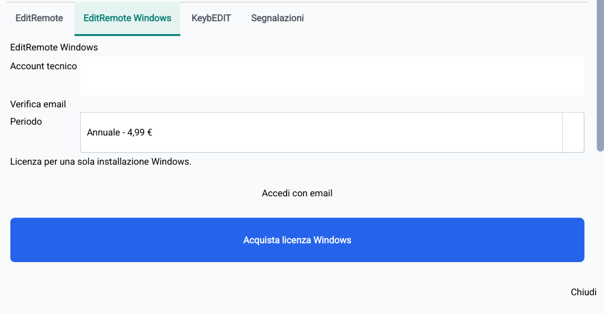
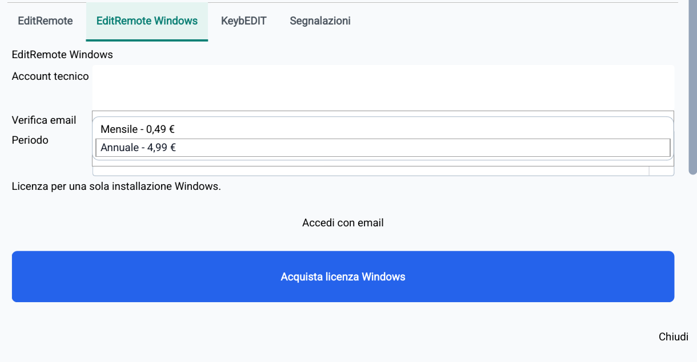
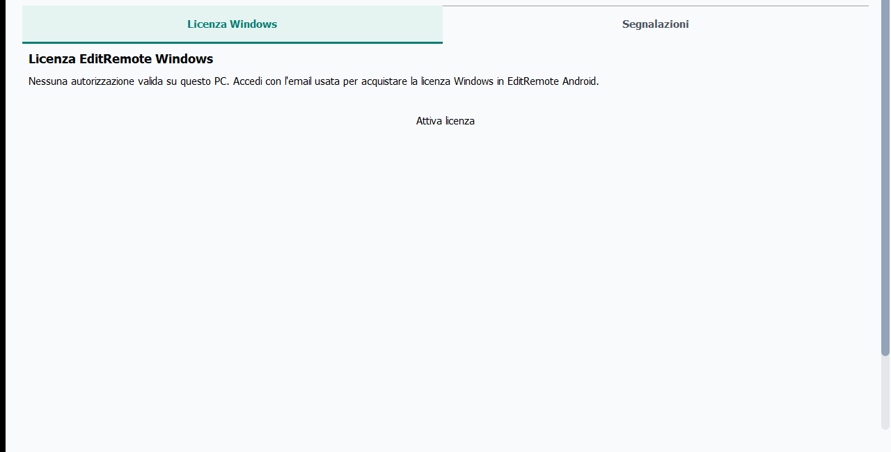
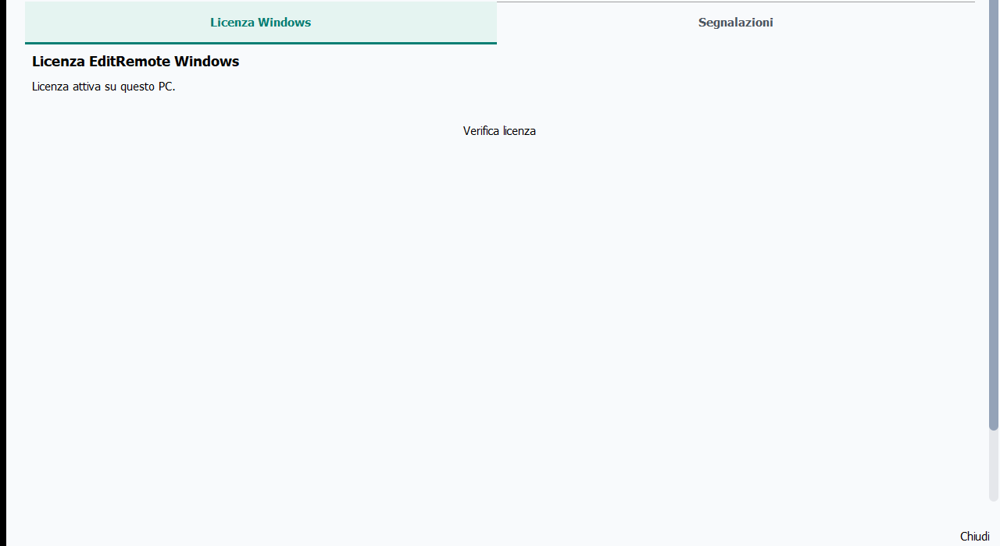
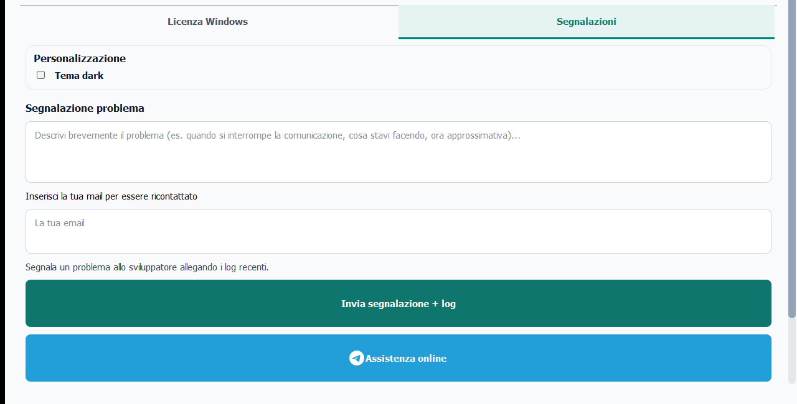

EditRemote Windows
1. Acquista la licenza in EditRemote Android
- Apri Abbonamento App e seleziona la scheda EditRemote Windows.
- Inserisci l’email dell’account tecnico che userai su Windows e premi Accedi con email.
- Apri il messaggio del servizio E-Remote e inserisci il codice nell’app Android. Questo OTP verifica l’account; non è il codice per Windows.
- Scegli il periodo mensile o annuale e premi Acquista licenza Windows.
- Prima di aprire Google Play, EditRemote verifica l’abbonamento Android e mostra la data fino alla quale sarà valida la licenza Windows. La licenza non può superare la scadenza dell’abbonamento Play; se questo è scaduto, il checkout viene bloccato.
- Controlla importo e prodotto nel riepilogo Google Play, poi conferma il pagamento. L’acquisto è una tantum: non si rinnova automaticamente.


2. Attiva EditRemote Windows
- Quando il pulsante di download è attivo, scarica e installa il pacchetto Windows x64 firmato, poi avvia EditRemote. Se non è disponibile, il pacchetto ufficiale non è ancora pubblicato: non usare versioni di collaudo.
- Apri Abbonamento App e seleziona Licenza Windows.
- Premi Attiva licenza e inserisci la stessa email verificata in Android.
- Richiedi e inserisci il nuovo OTP ricevuto via email nella finestra Windows, quindi premi Conferma. È un codice distinto da quello usato in Android: inseriscilo direttamente nell’app e non condividerlo.
- Quando compare Licenza attiva su questo PC, l’attivazione è completata.


3. Usa il PC offline
Windows conserva una lease firmata che consente l’uso offline per un periodo limitato. Quando l’app propone di rinnovarla, Sì la aggiorna tramite Internet; No non annulla l’acquisto e lascia valida la lease corrente fino alla sua scadenza. Il rinnovo della lease non è un nuovo pagamento.
Un aggiornamento in-place sullo stesso PC e con lo stesso profilo Windows conserva l’identità dell’installazione. Una disinstallazione con rimozione dei dati può invece creare una nuova identità: se compare “La licenza è ancora associata a un’altra installazione”, non acquistare di nuovo e contatta l’assistenza per il trasferimento.
Segnalazioni
La scheda Segnalazioni è disponibile accanto a Licenza Windows. Puoi descrivere il problema, indicare un’email per il ricontatto e inviare la segnalazione con i log recenti.

Download
Il download ufficiale x64 e il checksum SHA-256 saranno attivi quando il pacchetto di produzione sarà pubblicato. Non installare pacchetti di collaudo o staging.
Download non disponibile.